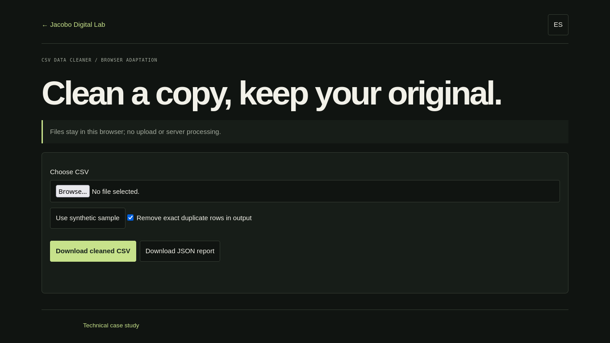

PROJECT CASE STUDY
CSV Data Cleaner
Inspect a CSV before downloading a cleaned copy
Choose a local CSV or try the synthetic sample. Review the proposed changes before downloading; your source file is never changed.

Open live demo ↗01 / PROBLEM
Problem: identify common CSV quality issues safely.
02 / OBJECTIVE
Objective: expose trimming, missing-value counts and exact duplicate detection.
03 / SOLUTION
Solution: browser port of the verified CLI transformations.
04 / ARCHITECTURE
Architecture: File API and local JavaScript processing.
05 / IMPLEMENTATION
Implementation: file preview, summary, clean CSV and JSON report downloads.
06 / TESTING
Testing: quoted fields, whitespace, missing cells, duplicate rows and empty input.
07 / LIMITATIONS & ROADMAP
Limitations & roadmap: browser adaptation, not the Python CLI; no upload or source-file modification.
08 / ACCESS
Access: live demo, repository and technical notes.